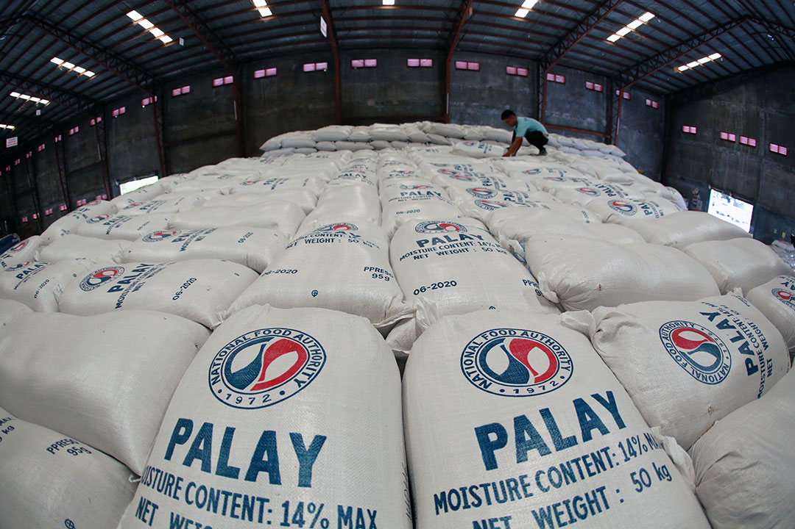

NFA sits on aging palay until January as a hedge against El Niño
24 Nov 2026 · BusinessWorld
NFA Administrator Larry del Rosario Lacson said the agency will hold palay older than the three-month "aging" threshold rather than auction it, in case El Niño and rising input costs hit the crop harder than expected. "I would rather hold on to slightly old or ageing stocks than end up with zero if we auction them," he said. Auctions could resume around January, depending on fourth-quarter output. DA puts El Niño palay losses at ₱4.05 billion as of 20 Nov. BusinessWorld adds that DA does not expect a shortfall because affordable imported rice is still coming in; 4.74 million MT had arrived by 12 Nov.
Operator read: the government is keeping the cushion in its own warehouse instead of releasing it to the market. For a rice-heavy menu, that removes one source of downward price pressure in December. Buy forward for the holiday rush and the January ramp at current wholesale prices, and keep a second miller or importer-supplied source on file in case local well-milled rice tightens in Q1.